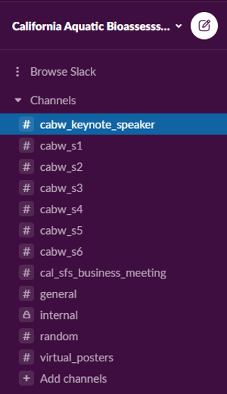

Slack is an online communication platform where users can join chat messaging rooms that are organized by topic. Since we are hosting a virtual meeting this year, the interactions we usually have during in-person events (e.g. chatting in the halls, or during a poster session), unfortunately, will not happen. Slack will allow us to replicate these types of interactions, to the extent we can, in the virtual world.
We are using it because…
By using Slack, everyone will be able to engage with one another, including the presenters, during and after the presentations. We also plan to gather questions from the attendees during the presentation Q&A’s.
All of us will be able to post questions, responses, and other resources (e.g. links, photos, documents) to all others to see.
Slack is FREE to join and use!
We encourage all those interested in engaging through Slack to join in advance of the meeting, if possible.
If you do not have a Slack account, you can create one for free by following these instructions on how to Get Started with Slack.
Once you have a Slack account, you will need to join our workspace: California Aquatic Bioassessment Workgroup
You can join via the Workspace to your account manually or
Select this link to be invited to join
Slack only works using the desktop app or when using Google Chrome or Firefox
If you already have a slack account, we recommend logging in and searching for the workspace: California Aquatic Bioassessment Workgroup rather than clicking the invitation link above.
Once you have entered the workspace, you should automatically have all channels added on the left-hand purple bar. Below is just an example of what you might see when you join the workspace (channel names may be updated):

#If you cannot get Slack to work but still have a question you would like to ask presenters, please send them to Shuka Rastegarpour
If you are new to Slack and want some additional help using the platform, we recommend you check out:
The Using Slack help page
Check out some of the Slack Tutorials
☵ Website design by Ryan Peek ☵